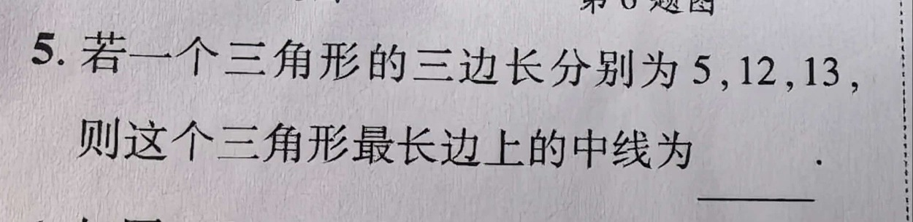

① 三角形的三边长分别为 5、12、13； ② 所求的是「最长边上的中线」； ③ 题目目前未作答（横线空白）。
求这个三角形最长边上的中线长度。
① 先判断三角形形状（关键第一步）： 5² + 12² = 25 + 144 = 169，而 13² = 169， ∵ 5² + 12² = 13²，∴ 该三角形是直角三角形，最长边 13 就是斜边； ② 用直角三角形的性质：斜边上的中线等于斜边的一半， 所以中线 = 13 ÷ 2 = 6.5。 （若不用这条性质，也可用中线长公式或建坐标硬算，但本题显然考的是「斜边中线」这一性质。）
① 不先判断三角形形状，直接套中线长公式（方向偏，且运算繁琐易错）； ② 把性质记错：写成“斜边的中线等于斜边的三分之一”，或干脆不记得这条性质； ③ 没注意问的是「最长边」上的中线——最长边 = 斜边 13，别去算 5 或 12 边上的中线； ④ 结果写成 6.5 或 13/2 都可以，但不要只写整数 6（丢精度）。
① 勾股定理的逆定理：若 a² + b² = c²，则该三角形是直角三角形（c 为斜边）； ② 直角三角形斜边上的中线等于斜边的一半（斜边中线定理）； ③ 三角形中线的概念（顶点到对边中点的线段）； ④ 常见勾股数要熟记：3-4-5、5-12-13、6-8-10、8-15-17。